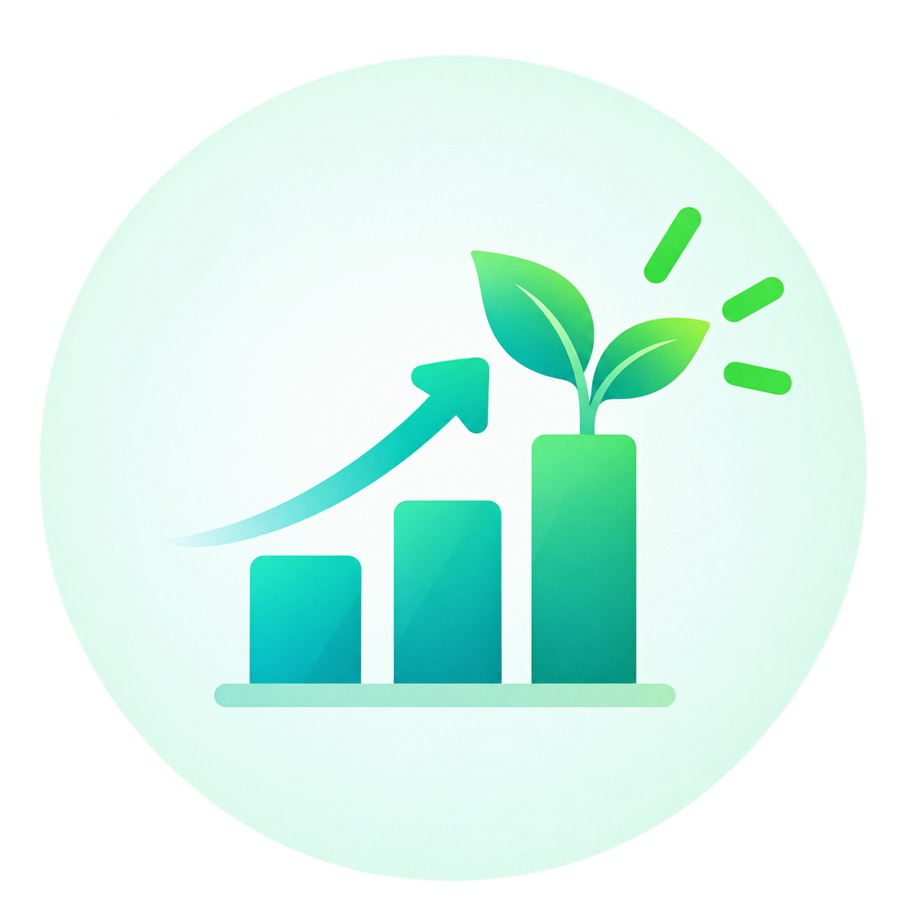
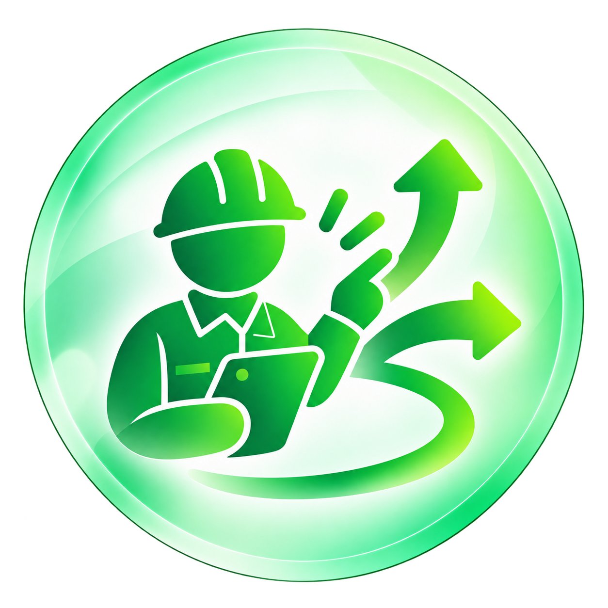

お問い合わせフォーム
企業・官公庁・イベント主催者の方へ
正式なお見積り・ご相談はこちら。
官公庁・自治体・企業のイベントを
企画から運営・テクニカルまで
グローパスは、官公庁・自治体・企業のイベントを
企画から運営、映像・音響・配信まで一貫して支える
イベントのプロフェッショナルです。
社名の「グローパス」は、Grow（育てる・成長する）と
Pass（つなぐ・受け渡す）という考え方から生まれました。
人の力、主催者の想い、そしてイベントの価値を次へつないでいく。
一つひとつの現場に向き合いながら、成果へ導く姿勢を、 この名前に込めています。

現場を育てる開催目的、来場者規模、求められる演出は案件ごとに異なります。
グローパスは、主催者の意図を丁寧に整理し、 現場に合わせた進行・体制・技術を組み立てます。

現場判断に強いサービス内容とこれまでの実績をご紹介します。
イベントの企画から当日の運営、映像・音響・配信まで、
トータルでサポートします。
これまでに支援してきたイベントの一例をご紹介します。
豊富な実績が私たちの強みです。
イベントの企画・運営に関するご相談は、
お気軽にお問い合わせください。
ご要望をお伺いし、最適な進め方をご提案いたします。
企業・官公庁・イベント主催者の方へ
正式なお見積り・ご相談はこちら。
まずは気軽に相談したい方へ
担当者が迅速に対応いたします。